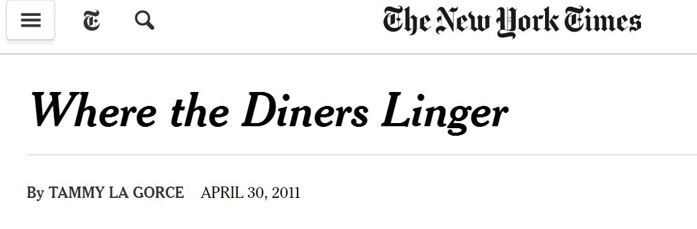

 Kathy West, co-owner of the Mockingbird Cafe, calls herself “my own worst promoter.” But the charming 40-seat cafe she and her husband, Tom, opened in August does a pretty good job of promoting itself.
That is evident especially on Saturdays and Sundays, when a line sometimes forms out the door during breakfast and lunch...
Day and night, the tables at Kathy and Tom West’s small Mockingbird Café in the center of Basking Ridge are topped with white butcher paper and well-used crayons. Servers appear to be in their teens. Locals come for down-home breakfasts and for items on the “casual” side of the lunch and dinner menus like burgers (beef, lamb, tuna or turkey), nuanced chili or meatloaf with mashed potatoes. You don’t expect such basic fare to be the work of two savvy, accomplished chefs. But take that meatloaf, a sophisticated mixture of beef veal, and pork. Its gravy is made from a classic demi-glace that starts with veal bones in a stockpot and takes days to complete...